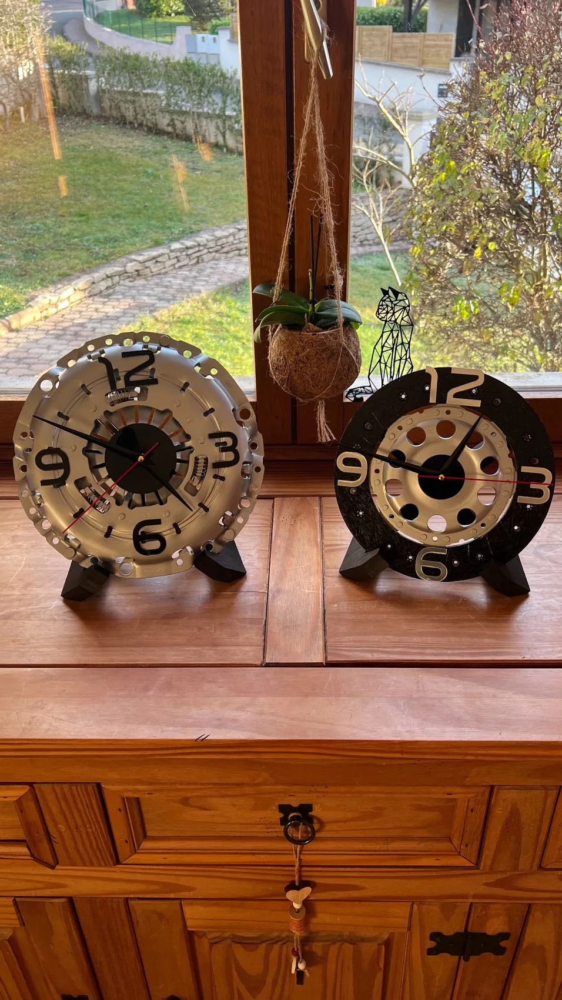
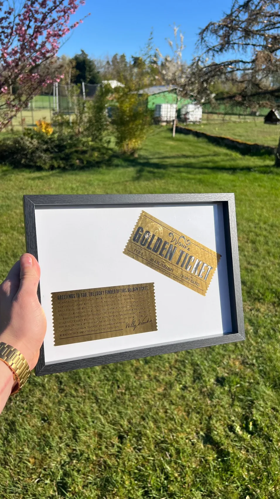
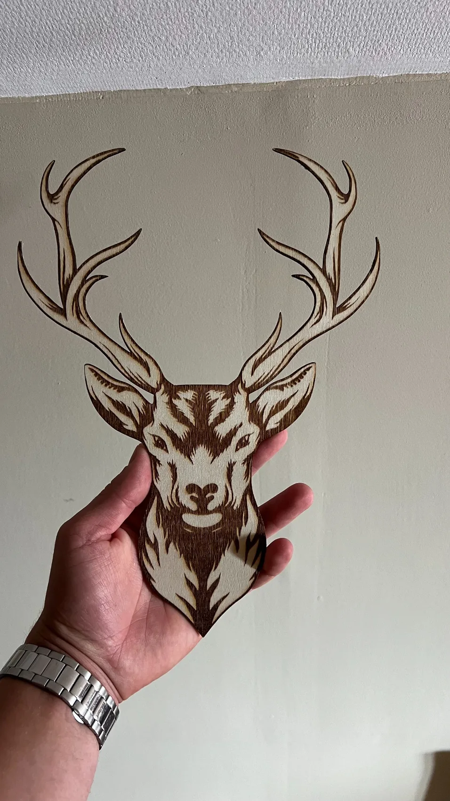
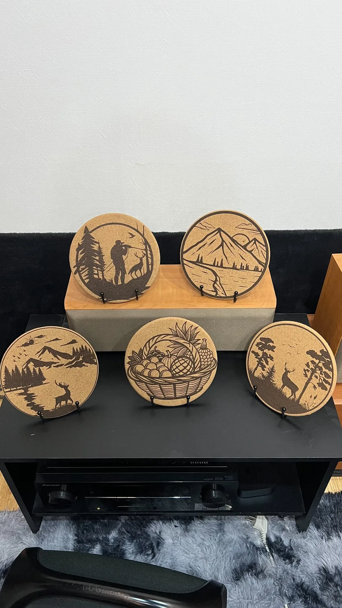
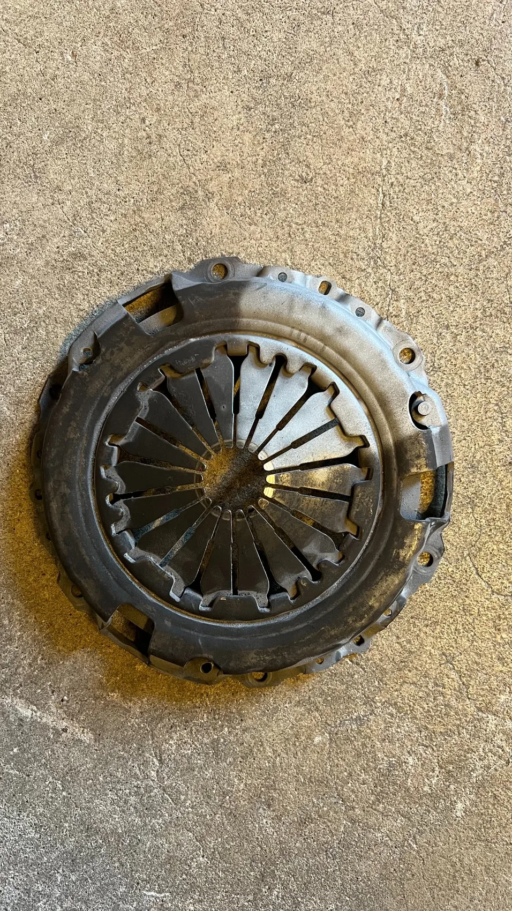

Horloge mécanique
Artisanat
Le pôle Artisanat transforme une idée, une pièce ou une contrainte en réalisation concrète : impression 3D, gravure laser, sablage, découpe, assemblage, décoration et objets personnalisés.

Sur demande
Une pièce à adapter, un support à créer, un objet à personnaliser, un cadeau à rendre unique : le pôle Artisanat permet de passer d’un besoin concret à une réalisation finie.
Petites pièces, supports, prototypes, adaptations et éléments introuvables en standard.
Décoration, signalétique, bois gravé, objets personnalisés et motifs sur demande.
Nettoyage de pièces, préparation avant finition et transformation d’éléments mécaniques.
Cadres, horloges, supports décoratifs, cadeaux événementiels et petites séries.
Pièces mécaniques transformées
Les pièces mécaniques peuvent devenir des objets décoratifs avec une vraie présence : horloges sur disque de frein, embrayage transformé, éléments sablés, supports et finitions personnalisées.
Réalisations Artisanat






Applications
Artisanat